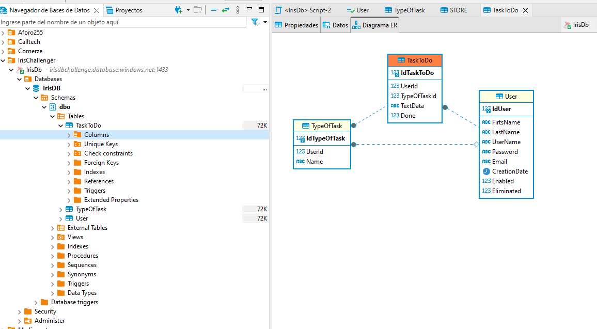

El proyecto IRIS Task List está diseñado para ayudar a los usuarios a gestionar sus tareas de manera eficiente. Los usuarios pueden añadir y eliminar tareas. La interfaz frontend está construida con Angular 16, ofreciendo una experiencia de usuario dinámica y responsive. El backend de este proyecto está construido con .NET 7.0. y desplegado en Azure en un app service con su base de datos
To clone the repository, use the following git command:
git clone https://github.com/Wicriix/IrisBank.git
si quieres no ejecutas el backed ya que lo subi a la nube y esta bajoe sta url https://iristestback.azurewebsites.net (la cual esta ya conmfigurado en la coleccion de postman que esta en el proyecto), pero si aun asi quieres ejecutarlo debe tenjer sql instalado en tu maquina y te deje un archivo .bak para que restaures la DB y le agregues tu conexion al app settings.
video
{{conect}}
playVisita Node.js y descarga la versión 16.17.0. Instálala y verifica la instalación en la terminal con node -v y npm -v.
En la terminal, ejecuta npm install -g @angular/cli@16.2.10 y verifica con ng version.
en el codigo clonado en la carpeta IrisToDoList_Front se encuentra el front abrelo con vs code
o Navega con un cmd a esta ubicacion
como ya te encuentras en la ubicacion del proyecto ejecuta npm install.
En la carpeta del proyecto, ejecuta ng serve.
Abre un navegador y visita http://localhost:4200.
aca encuentars el video con la explicacion del proyecto
Step-by-Step Video